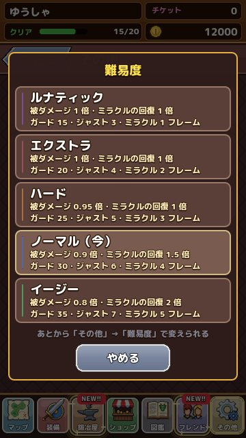
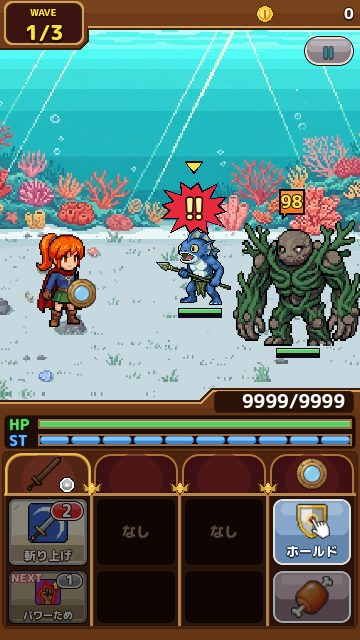
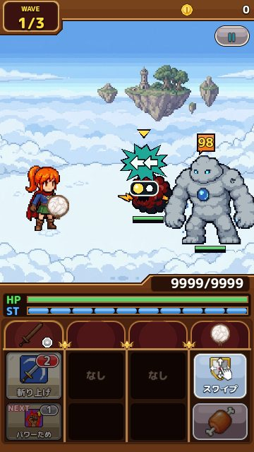

ガードの判定の作り方：1 フレームの窓とタッチの遅れ
60 分の 1 秒単位で決まるガードの判定を、スマホの指と画面の遅れに合わせてどう作ったかを紹介します。 更新：2026-11-23
ゲームの時間は「フレーム」で数えています
キシドラ！の戦いは、1 秒を 60 に分けた「フレーム」という単位で動いています。敵が「!!」を出してから点滅し、振りかぶって攻撃が当たるまで、すべての動きがフレームの数で決まっていて、ガードの判定もこの数で行います。1 フレームはおよそ 16.7 ミリ秒です。
地上のふつうの攻撃では、「!!」が 30 フレーム、点滅が 16 フレーム、振りかぶりが 12 フレーム続き、そこからさらに 4 フレーム待ってから判定をします（この 4 フレームの理由はあとで説明します）。合わせて 62 フレーム、約 1 秒です。「!!」を見てから押しはじめても十分に間に合う長さにしてあり、そのかわり「いつ押したか」を 1 フレーム単位で細かく見ています。
もとになったスーパーファミコン風のバージョンでは、ガードの構えは 20 フレーム、ミラクルガードは当たるフレームちょうどの 1 フレームだけ、ジャストガードはその前の 3 フレーム（ボスの必殺技は 2 フレーム）という決まりでした。開発の途中で一度は「ミラクル 3 フレーム・ジャスト 6 フレーム・構え 40 フレーム」というゆるい形も試しましたが、ゆるすぎて狙う楽しさがなくなったので、2026 年 10 月 13 日にこの厳しい形へもどしています。

判定は「何フレーム前に押したか」だけを見る
判定のしくみそのものはとても単純です。攻撃が当たるフレームから、ガードボタンを押したフレームを引いて、「何フレーム前に押したか」を出します。その数がミラクルの窓に入っていればミラクルガード、ジャストの窓に入っていればジャストガード、構えの長さの中ならふつうのガードです。当たったあとに押したものは、どれだけわずかな差でも間に合いません。
ノーマルの場合を例にすると、次のようになります。
- 当たる 0〜3 フレーム前に押した：ミラクルガード（窓は 4 フレーム）
- 当たる 4〜9 フレーム前に押した：ジャストガード（窓は 6 フレーム）
- 当たる 10〜29 フレーム前に押した：ふつうのガード（構えは 30 フレーム）
- それより早い、または当たったあと：ガードできない
構えには終わりがあるので、早く押しすぎると攻撃が来る前に盾を下ろしてしまいます。さらに、構えたあとには少しの間ボタンが灰色になって押せない時間（20 フレーム）があります。何度も連打して当てずっぽうに防ぐことができないようにするための決まりです。
難易度ごとの受付の表
難易度は 5 段階あり、それぞれ構えの長さ、ジャストの窓、ミラクルの窓が決まっています。数字はすべてフレームです。ジャストの窓は、ミラクルの窓のさらに前に続く長さです。
| 難易度 | 構え | ジャスト | ミラクル | 押し始めの受付（天空） | 受けるダメージ | ミラクルの回復 |
|---|---|---|---|---|---|---|
| ルナティック | 15 | 3 | 1 | 6 | 1 倍 | 1 倍 |
| エクストラ | 20 | 4 | 2 | 8 | 1 倍 | 1 倍 |
| ハード | 25 | 5 | 3 | 10 | 0.95 倍 | 1 倍 |
| ノーマル | 30 | 6 | 4 | 12 | 0.9 倍 | 1.5 倍 |
| イージー | 35 | 7 | 5 | 14 | 0.8 倍 | 2 倍 |
この表は一度で決まったものではありません。2026 年 10 月 31 日に 5 段階に分けたとき、ルナティックはミラクルが出ない設定でした。遊んでみると「さすがにやりすぎ」という結論になり、当たるフレームちょうどだけ（猶予 0 フレーム）のミラクルを入れています。同じ日の夜には、エクストラから下のミラクルの窓を 1 フレームずつ広げ、ミラクルで回復する量もノーマル 2 倍から 1.5 倍、イージー 3 倍から 2 倍に見直しました。遊び方の説明は 難易度 5 段階のちがい にまとめています。

スマホでは「見えた瞬間」がずれる
スーパーファミコン風のバージョンをそのままスマホへ移すと、困ったことが起きました。敵の攻撃が当たって見えた瞬間にぴったり押しているのに、ミラクルどころかジャストにもならないのです。
原因は二つの遅れです。一つは、ゲームが絵を作ってから画面に映るまでの遅れ。もう一つは、指が画面にふれてから、その知らせがゲームに届くまでの遅れです。どちらも数十ミリ秒の小さなものですが、ミラクルの窓が数フレームしかない以上、無視できません。人は「当たって見えた絵」に合わせて押すので、押した知らせが届くころには、ゲームの中ではもう当たったあとになっていました。
そこで、攻撃が当たって見える絵を出したあと、判定するまでに 4 フレーム待つことにしました。ゲームの中では GUARD_LATE_FRAMES という名前の数で、約 67 ミリ秒です。見えた瞬間に押した知らせがちょうど判定のフレームに届くので、「当たって見えた瞬間に押すとミラクル」という感覚どおりになります。
機種ごとの差は「ガードのタイミング」で合わせる
遅れの大きさは、スマホの機種、ブラウザ、画面の設定によって変わります。4 フレームはわたしたちが試した機種でちょうどよかった数ですが、すべての人に合うとはかぎりません。そこで設定の画面に「ガードのタイミング」を置き、0〜10 フレームの間で 1 フレームずつ変えられるようにしました。ふつうは 4 で、数を増やすと判定が遅くなり、減らすと早くなります。
画面には「ちゃんと押したのに間に合わないと感じたら +、早すぎて外れると感じたら −」と書いてあります。この設定は記録ではなく端末ごとに残るので、機種を変えたときは新しい端末で合わせ直してください。引き継ぎコードにも入れていません。
フリックは指が動く分だけ遅らせる
地底では、攻撃の向きに合わせて指をはじく「フリックガード」になります。ここでまた別の遅れが出てきました。タップは指がふれた瞬間に決まりますが、フリックは指が動いて向きが分かるまで決められません。画面の座標で 14 ドット分動いたところで、はじいたと見なしています。
指が動くには時間がかかるので、向きのある攻撃だけは、判定をさらに 2 フレーム遅らせています（FLICK_LATE_FRAMES）。つまり地底の攻撃は、見えてから 4＋2＝6 フレーム後に判定します。指が動ききる前に画面から離れてしまったときも、決めた距離の 60% 以上動いていれば、離した時に向きを決めます。
フリックでは失敗した話もあります。2026 年 11 月 4 日に「連続攻撃の 2 発目がブロックできない」という報告をいただきました。調べると、1 発目をうまく受けるほど、そのあとの構えと灰色の時間が 2 発目の振りかぶりにかぶり、そこでのフリックが捨てられていました。ノーマルで 1 発目をミラクルで受けると、2 発目を防げるのは当たる 7〜13 フレーム前だけになっていたのです。今は、次の発の「!!」が出た時点で前の構えと灰色を消すようにしています。「!!」から当たるまでは 44 フレームあり、どの難易度の構えより長いので、これで防げるはずの発がなくなることはありません。
ホールドは「押し始め」と「離す時」の 2 か所
海底では、攻撃の間ずっと指を置いて、終わりに離す「ホールドガード」になります。判定するのは押し始めと離す時の 2 か所です。押し始めに失敗するとその攻撃は全部当たり、途中で離すと、守れなかった時間の割合だけダメージを受けます。
押し始めの受付は、何度か行ったり来たりしました。最初は構えと同じ長さで、ノーマルなら 30 フレームのどこで押しても成功でした。「始まりの判定が甘い」という声を受けて、2026 年 11 月 8 日に難易度表の「押し始め」の列（ジャストの 2 倍、ノーマル 12 フレーム）へ締めました。ところが今度は、あるボスの必殺技がほとんど防げなくなり、11 日に海底だけ構えと同じ長さへもどしています。表の 12 フレームは、今は天空の押し始めに使っています。
離す時は、ふつうのガードと同じ窓で見ます。ノーマルなら終わりの 0〜3 フレーム前に離せばミラクル、4〜9 フレーム前ならジャストです。終わってもまだ押していると失敗にしたので、「とりあえず押しっぱなし」では防げません。見えにくい「離す時」を読めるように、攻撃の終わりの 40 フレームには、判定の窓と同じ色分けのゲージを出しています。
ほかにも、遊んだ声から直したことがあります。1 段が 0.5 秒しかない攻撃は、押した直後に離すことになり、実質タップと変わりませんでした。今は 1 段をいちばん短くても 1 秒にしています。攻撃が来る前に押して離した指が「失敗」になっていた不具合も、今は取り消して押し直せるようにしています。遊び方は 海底編の記事 にあります。

天空の連続攻撃とミラクルの決まり
天空の攻撃はいつも 2 発以上の連続攻撃です。1 発目は必ず左へフリックして受け、指を離さずに、2 発目からは吹き出しの向きへ続けてはじきます。2 発目からは、前の発が当たってから次の発までの時間が 1 発目の 75% と短くなります。
この連続攻撃では、最後の発でその攻撃全体の結果を出します。はじめは「いちばん悪かった発の結果」にしていました。分かりやすい決まりですが、2026 年 11 月 23 日に「天空のミラクルが全然出せない」という声が届きます。押す時を 1 フレームずつずらして結果を調べる道具で確かめると、全部の発をノーマルで 4 フレームしかないミラクルの窓に入れる必要があり、2 発の攻撃で約 1 割、5 発ではほとんど出ていませんでした。
そこで決まりを変えました。今は、途中の発が全部ジャスト以上で、最後の発がミラクルのタイミングならミラクルになります。ジャストとふつうのガードは前と同じで、途中にふつうのガードの発があれば結果もガードまでです。途中の発は字を出さないかわりに、盾の前の小さな光の色（ミラクルは金、ジャストは水色、ガードは青）で、どのくらいのタイミングだったかを見せています。途中の発で受けるダメージも、本当のタイミングどおりに減ります。
⚡ の攻撃だけは別のしくみで、指を置いたまま当たるまでにガードボタンを 6 回たたくとガード、9 回でジャスト、12 回でミラクルです。遊び方は 天空編の記事 を見てください。

判定を作るときに気をつけていること
- 判定は見た目と切り離し、フレームの数だけで決めます。同じ押し方なら、何度やっても同じ結果になります
- 判定の窓を変えたら、押す時を 1 フレームずつずらす自動のテストで、窓のはしの結果を確かめます
- 画面に出すゲージや色は、判定と同じ数から描きます。見た目と判定がずれないようにするためです
- 「できたはずなのに失敗した」という声は、まず数字で再現してから直します
ガードは、このゲームでいちばん触る回数の多い操作です。1 フレームの差で結果が変わる厳しさと、スマホでも「押した感覚どおり」になる気持ちよさを両立させるために、これからも細かく調整を続けていきます。上達のコツは ガードの極意 で紹介しています。